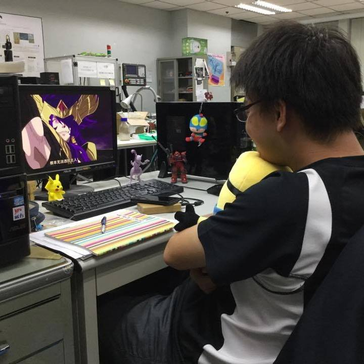
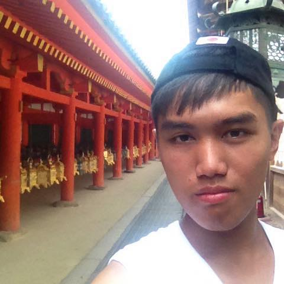

組長

- 姓名：陳兆陽
- 就讀系級：機械系大四乙班
- 興趣：打網球、做模型、爬山、慢跑
- 技能：畫工程圖、噴漆、模型處理技能、弱弱的C++、弱弱的html.......(掩面)
- 喜歡吃的東西：基本上都可以接受，不過我不能喝咖啡>_<(會心悸)，很喜歡
- 吃日式的海鮮丼飯、拉麵還有台南各式小吃
- 喜歡的店家：兵衛丼、六千牛肉湯、無名魚湯、Mr.拉麵
- 想說的話：大家安安~~我是吃~吃吃~~的發想人，老實說~~我沒想到這個想法會
- 被教授看中.....。不過~~既然選到了就來做吧~~因為想知道哪裡有很厲
- 害的店家又懶得出去找，只好來做一個網頁請大家幫我找了。希望大
- 家在這裡分享自己喜歡的店家偶爾可以跟不認識的人一起去探險的感
- 覺應該很特別(搞不好會因為喜歡同一種食物或店家而結交新朋友喔^^)
- 夥伴們，一起探索這個世界的美食吧!!
組員
- 姓名：陳杰翰
- 就讀系級：資訊系
- 興趣：看電影，寫程式，聽音樂
- 技能：會說多國語言像是：C, Python
- 喜歡吃的東西：拉麵，焗烤，燉飯。
- 喜歡的店家：福吉雅輕食坊，黑湯哲學
- 想說的話：Hi, 我是陳杰翰，在網路上的暱稱是 JIElite
- 目前是一個廢廢的資工系大四生，希望未來能夠藉由自己的專業來
- 幫助這個社會，未來的目標是當一位 Data Scientist
- 姓名：黃昱銓
- 就讀系級：機械系
- 興趣：看動漫、聽音樂
- 技能：matlab,solidwork,c
- 喜歡吃的東西：壽司、甜點、咖啡
- 喜歡的店家：魚羊鮮豆咖啡
- 想說的話：安安~我是昱銓~雖然是個剛踏入機械的小兵，對網頁有點興趣，老師上
- 好快，無法吸收阿QQ
- 姓名：吳懿文
- 就讀系級：工業與資訊管理學系
- 興趣：打網球、打壘球、聽音樂、打LOL
- 技能：C++,JAVA,MYSQL,Qt,Hadoop(Hbase),html,css,jquery
- 喜歡吃的東西：最近比較喜歡吃炒飯、鍋貼。
- 喜歡的店家：小妞、南園街鍋貼
- 想說的話：雖然我從大一才開始學習程式，但到現在大肆我已經寫過很多有趣的
- 東西了，但是目前我似乎得把一些案子放下準備研究所考試，為了活動
- 跟實作(雖然原本就不愛念書)，使得我成績不理想，推甄被刷0.0
- 個人簡介可以看我的另一個網頁
